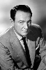
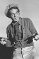

Country:United States, 64 minutes
Spoken languages:
Genres:Comedy, Crime, Mystery
Director(s):William C. Thomas
Writer(s):David Lang
Video Codec:Unknown
Number: 1764


Certification:NR
Storyline:
Two reporters search for a missing body in a wax museum.
Cast:  

Medium: Original DVD,
Comments: Part of: Mystery Classics - 50 Movie Pack
Loaned: No
Aspect ratio: Unknown